2025版 RX42BR
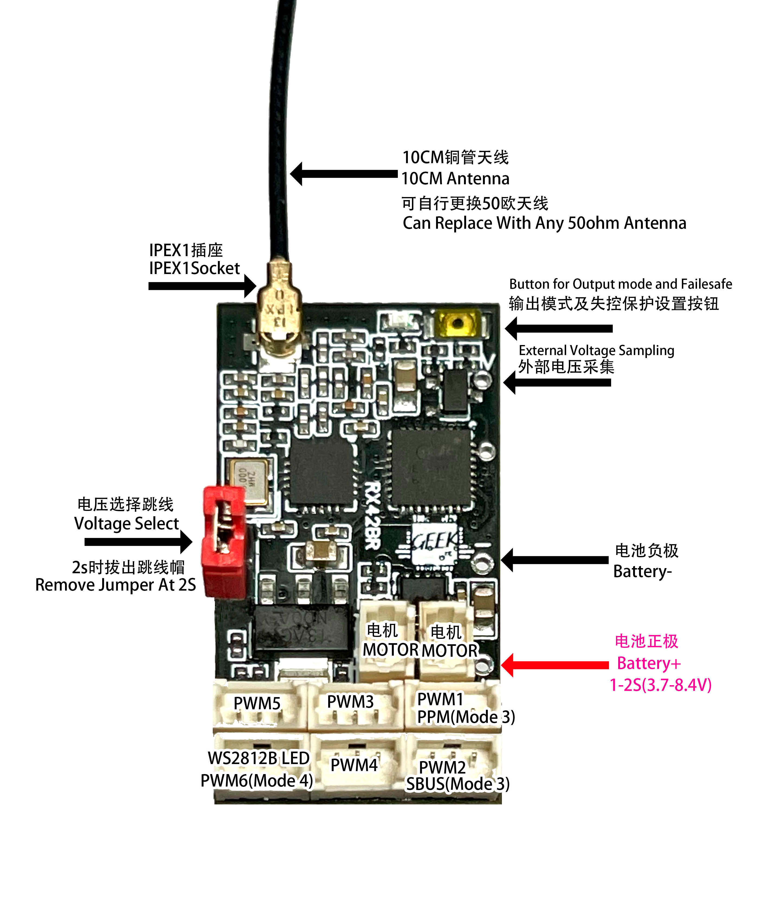
RX42BRB:
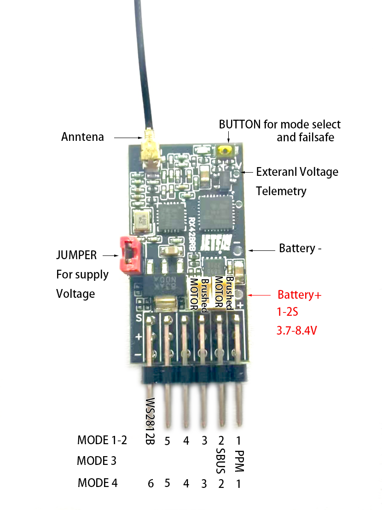
RX42BL:
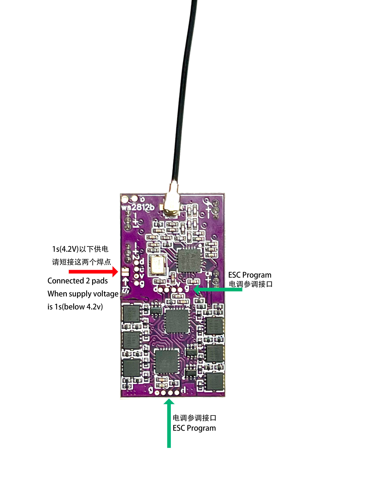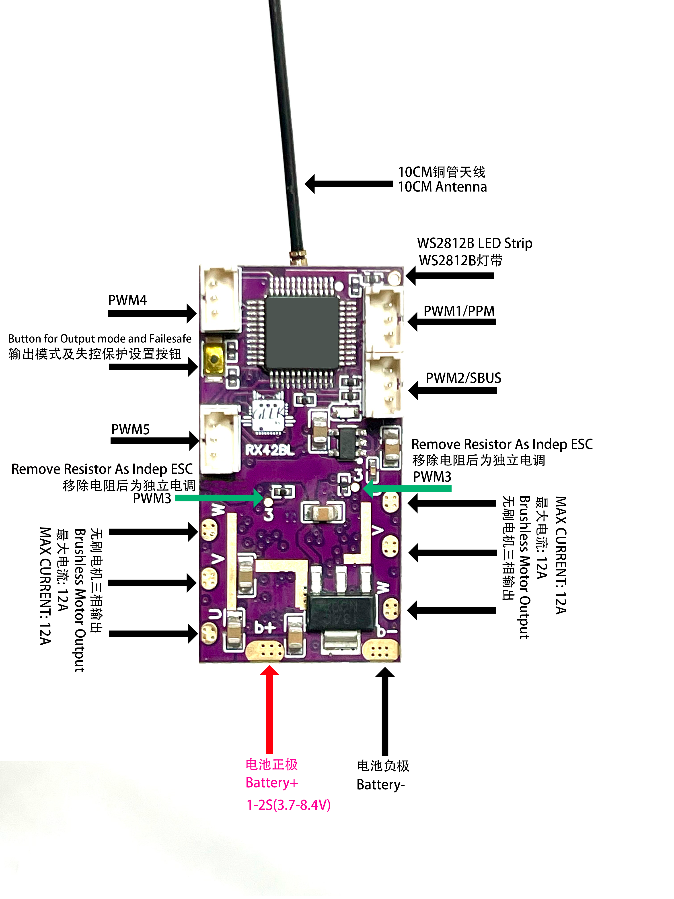
2024版：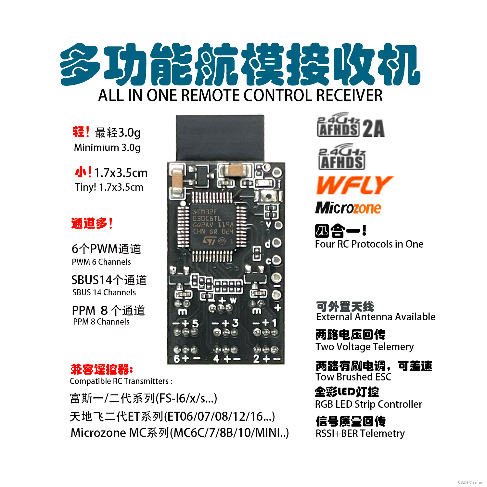
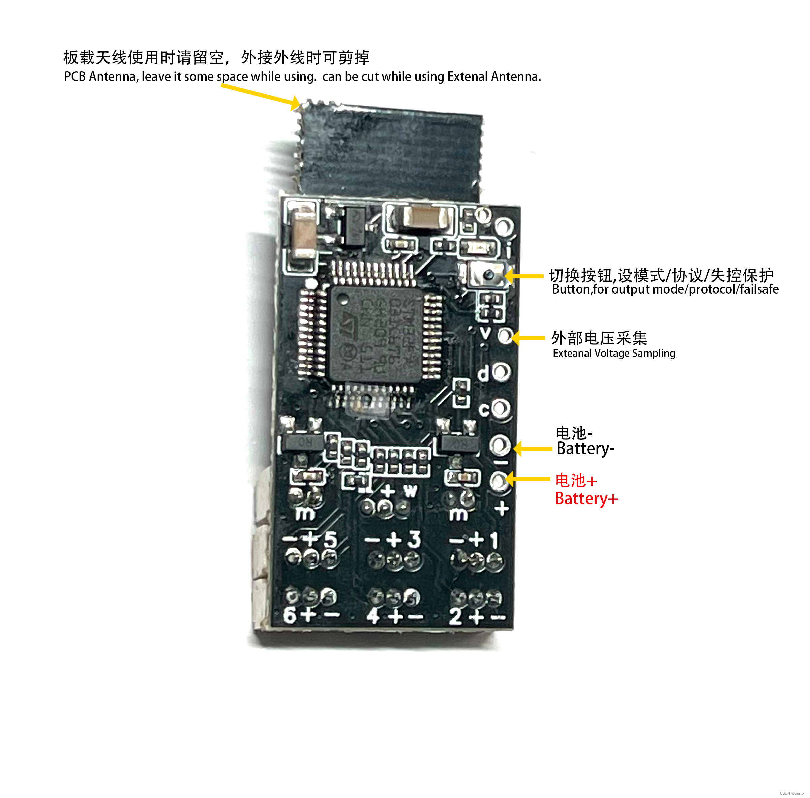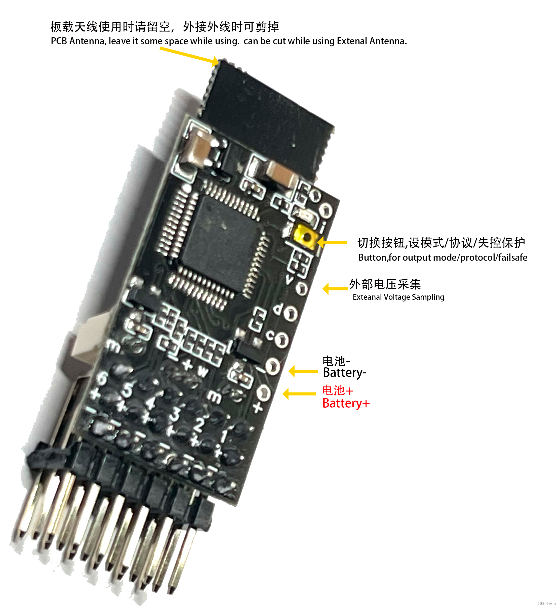
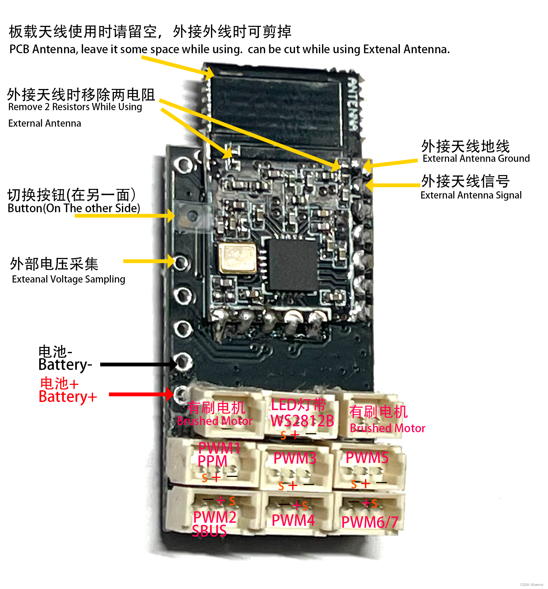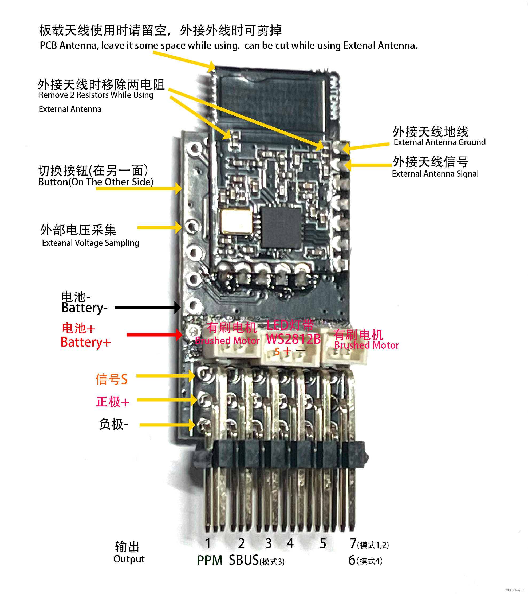
2023前的版本：
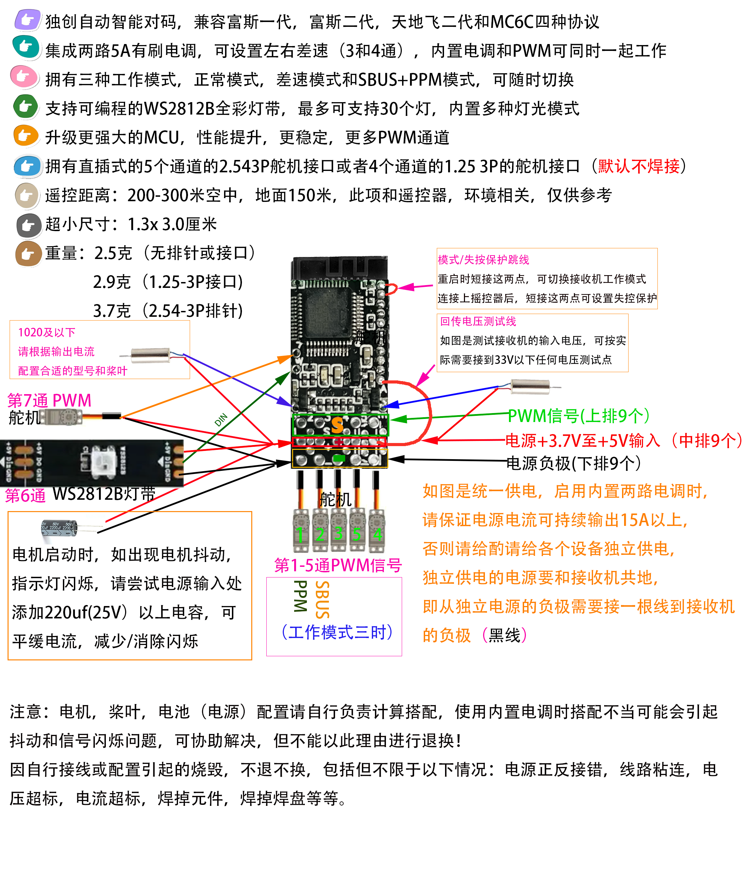
（上图，飞机用的接收机）
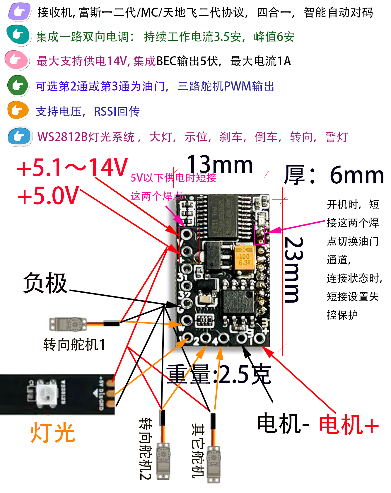
（上图，车用的接收机）

新版 2.54接线图
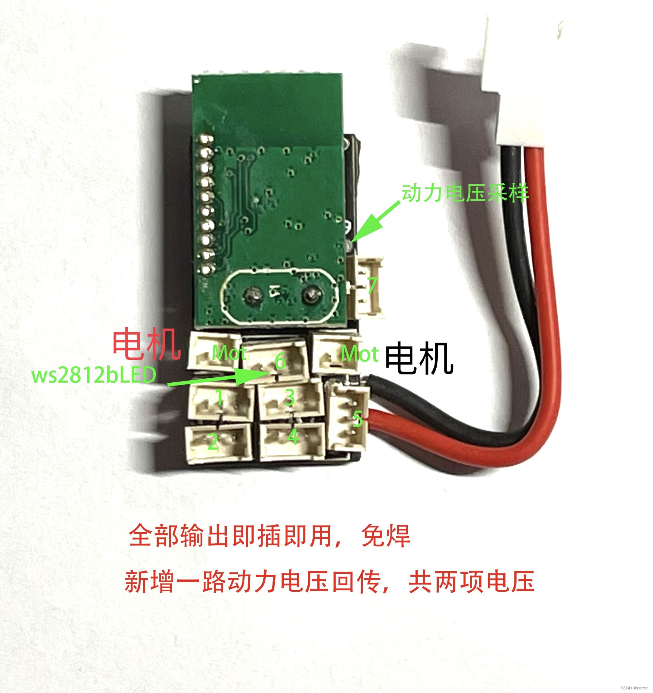
新版 1.25的接线图
目录
4.1 飞机用的接收机（大板，有5个标准舵机输出的），有三个工作模式
| 视频教程 |
| 四合一多协议接收机RX42BR和天地飞et16s对码_哔哩哔哩_bilibili |
| RX42BR四合一多协议接收机切换工作模式教程_哔哩哔哩_bilibili |
| RX42BR多协议航模接收机rgb全彩ws2812b灯带联接教程_哔哩哔哩_bilibili |
1. 如何和遥控器对码？
A:
富斯FLYSKY，天地飞:
一 关闭遥控器， 接收机上电，等20秒，它的指标灯会规则慢闪
二 打开遥控器开机进入对码模式，天地飞是菜单里进入，富斯是按binding键，再按电源键开机。
三 静待20秒，即可自动完成对码。
（使用富斯一代协议时，观察到接机器快闪一段时间，熄灯重启，这时其实已经完成对码，重启遥控器即可）
迈克MC6C/MC7/MC8B/MC10:
一 关闭遥控器， 接收机上电，等20秒，它的指标灯会规则慢闪
二 观察到闪的频率较慢时，打开MC遥控器，接收机快闪，然后常亮，对码完成
三 最新版本带按钮的，可以按一下，让它一直较慢的闪，保持在MC6c的协议。
（mc6cmini需要切换射频模式为旧协议，mc7,mc7mini，mc8,mc10等选mc7rb接收机）
2. 如何切换对码另一个摇控器？
A：
关掉旧的遥控器，放一边，然后拿出新的遥控器，接收机重新上电，然后和第1节的对码流程是完全一样的。
3.如何切换或设置接收机的工作模式？
A：
以下操作需要在对码完成之后进行操作。
方法一.
1. 关闭遥控器，关闭接收机，接收机重新上电。20秒内按住接收机右上角的按钮。
（旧版： 接收机然后使用一字螺丝批（或其它合适工具）短接右上角两焊点（见上封面两图右上角标注）保持短接两个焊点状态，打开接收机。）
2. 一直保持按钮按下（旧版：短接两个焊点）状态，观察指示灯，这时指示会进入每3秒一个周期的闪烁，每3秒闪多少下，就是当前要选的模式几，如每3秒闪两下，表示当前的要选的模式是2. 闪烁会循环重复，错过了模式，保持短接的状态，再等一圈就好了。
3. 当闪烁到达你想要的模式时，如每3秒闪2下时，取消短接状态，这时接收机快闪几下，保存，重启，模式选择完成。
方法二. (FLYSKY i6 i6x 等有菜单遥控器)
1. 进入设置菜单
2. 进入系统设置(System)
3. 进入接收机设置(Rx Setup)
4. 进入i-Bus setup
5. 选择通道(channel), 通道1-7对应 模式1-7
6. 长按cancel
7. 再短按一下cancel.
注意! 遥控不会保存这个选择的, 仅接收机保存模式。请看第9节。
4. 有多少个工作模式？每个工作模式有什么不同？
4.1 飞机用的接收机（大板，有5个标准舵机输出的）
1. 模式1， 正常模式，这个是默认出厂模式， 这个模式有6个pwm输出，加一个wsled的信号输出，内置电调和3/4通道正常输出，非差速。
2. 模式2， 差速模式，这个也是6个pwm输出，加一个wsled的信号输出，但是3和4通是差速混控输出的，内置两个电调也是差速度输出。
3. 模式3，SBUS+PPM模式， 这个仅在1和2通道分别输出ppm和sbus信号，其它接口不输出信号
4. 模式4（2024版）, 功能和模式1一样，就是wsled灯带在7通控制，而pwm接口输出6通的pwm信号。
4.2 车用的接收机，有两个工作模式
1. 模式1, 使用2通道作油门
2. 模式2，使用3通道作油门
5. 内置电调和外置电调可以同时工作吗？
飞机用的接收机可以，外接和内置电调可以同时工作，他们同时响应一样的油门数值。
车用的接收机可以接到3个的PWM输出任一个接口上，但是不能同时响应一样的油门数值。
6. 如何接线？
见封面图。
A：车用的灯条的定义如下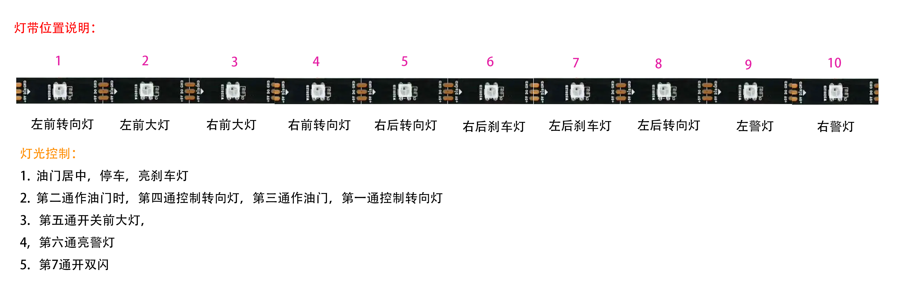
飞机用的灯条的定义如下：
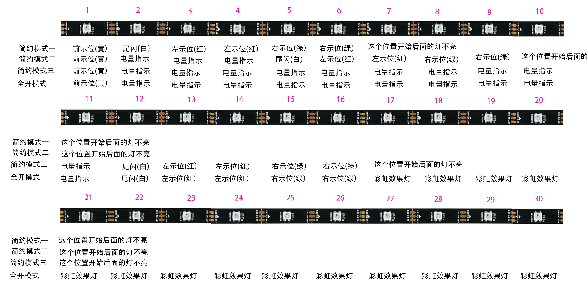
通过第6通道开关可以循环切换模式
8. 如何切换RGB灯带的模式？
A: 选择带RGB灯带控制的模式后使用第6通道进行控制。每次开或者关，都会切换一个模式。
9. 如何判断接收正当前的工作模式？
A： 对频完成后，关闭摇控机，接收指示灯进入闪烁模式， 每三秒闪几下表示模式几，如闪2下，表示模式2
10. 如何设置失控保护（failsafe)
A:
富斯遥控器请到菜单中设置，菜单路径：SYSTEM（系统）->RX Setup(接收机设置）->FailSafe(失控保护）
天地飞二代摇控也可以菜单设置，我没有，不知道怎么设置，自己研究
其它遥控器，请在接收机和遥控器对码完成后，
1. 打开接收接，打开遥控器，待连接完成，指标灯长亮
2. 把杆位或开关打到失控时需要设置的位置
3. 使用螺丝批短接右上角两个焊点（见上封面两图右上角标注）2秒
4. 指标开始闪烁，此时松开短接，接收机会保存重启
5. 使用完成
11. 什么指示灯会半亮？
A： 这个是因为上电时，针脚有静电误入刷机模式了，重启一下就可以了。
12. 车用的通道映射是怎么样的？
A： 当二通作油门时（默认）：
转向舵机1--->4通
转向舵机2 ---> 3通
其它舵机 ---> 1通
当三通作油门时
转向舵机1--->4通
转向舵机2 --->2通
其它舵机 ---> 1通
13. 为什么连接上接收机之后，摇控机发出报警声？
A： 这个是因为电压测试线没有接，回传电压为0引起的，请看前面大图右边关于电压测试的说明和示意进行接线。
如果连接完还是报警，那么这个情况是摇控机默认的报警电压过高，如设置了5V(这个是默认的），但供电是1s的时候，请到摇控的对应的接收机电压报警电压菜单，设置合适的报警电压。